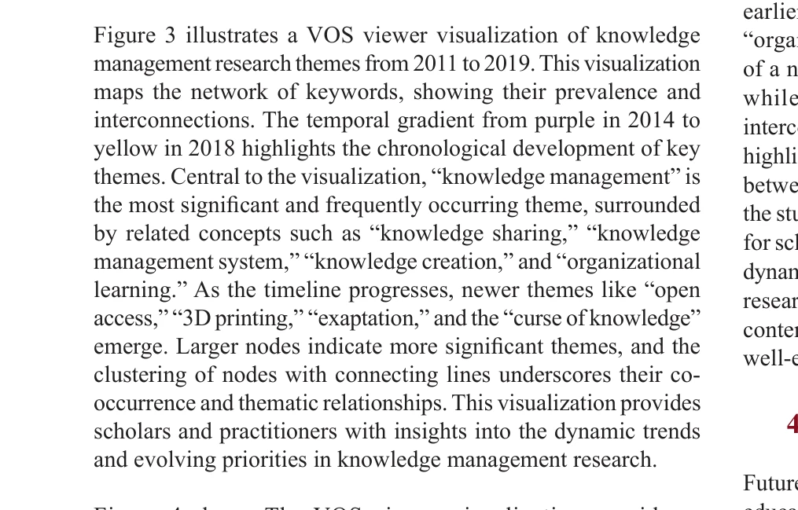

Essence

Figure 1: Knowledge management in higher education research
본 연구는 1998-2024년 Scopus 색인 논문 696개를 분석하여 고등교육기관(HEIs)의 지식관리(KM) 연구 동향을 파악하고, AI와 디지털 변환을 미래 연구 방향으로 제시한 종합적 bibliometric 분석이다.
저자: Mohamed Aghel Altawe, M. A. Yakhlf, Aza Azalina Binti Md Kassim | 날짜: 2026 | DOI: 10.32479/irmm.21392
Figure 1: Knowledge management in higher education research
본 연구는 1998-2024년 Scopus 색인 논문 696개를 분석하여 고등교육기관(HEIs)의 지식관리(KM) 연구 동향을 파악하고, AI와 디지털 변환을 미래 연구 방향으로 제시한 종합적 bibliometric 분석이다.

Figure 3 illustrates a VOS viewer visualization of knowledge

Figure 4 shows The VOS viewer visualization provides a
총평: 본 연구는 HEI의 KM 연구에 대한 최초의 포괄적 26년 시계열 bibliometric 분석으로, AI와 digital transformation이라는 새로운 연구 방향을 제시하여 학계와 정책 입안자에게 전략적 통찰을 제공한다. 다만 단일 데이터베이스 의존성과 인용도 기반 평가의 한계를 보완한 후속 연구가 필요하다.